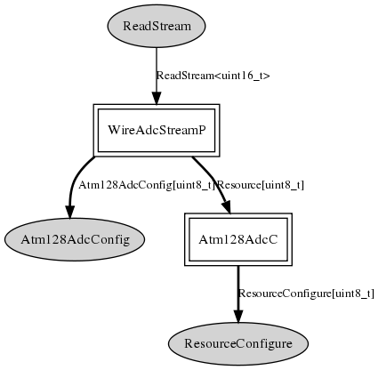

Provide, as per TEP101, arbitrated access via a ReadStream interface to the Atmega128 ADC. Users of this component must link it to an implementation of Atm128AdcConfig which provides the ADC parameters (channel, etc).
